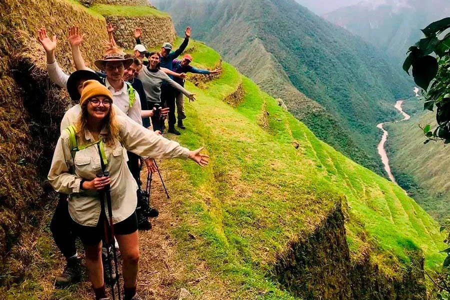
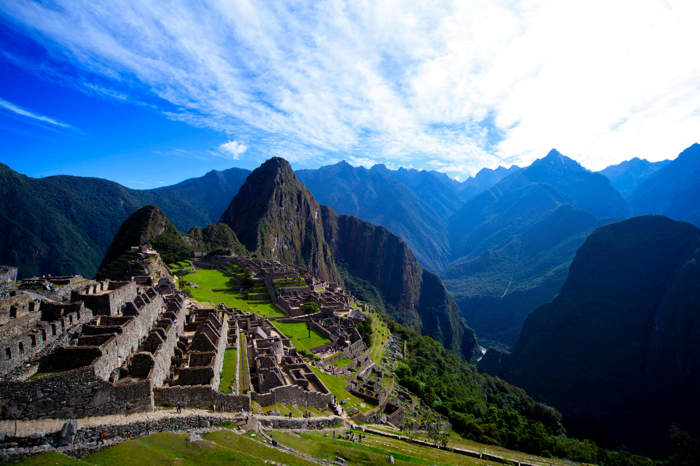
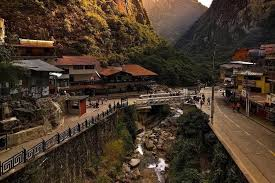
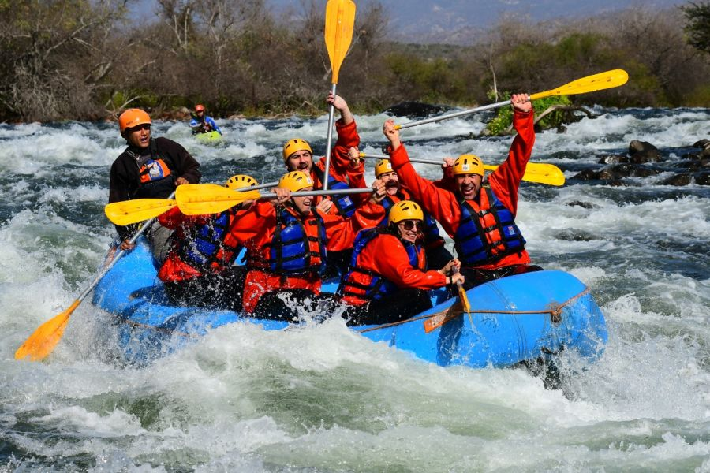
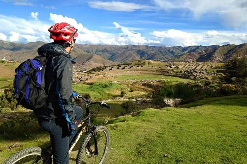
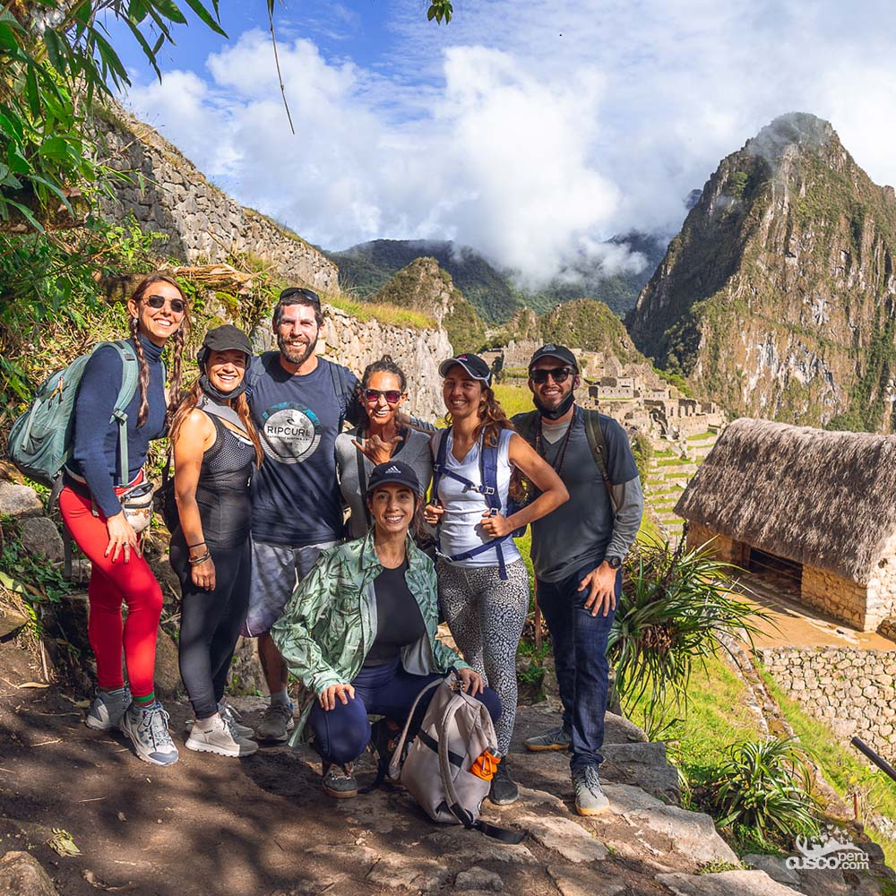
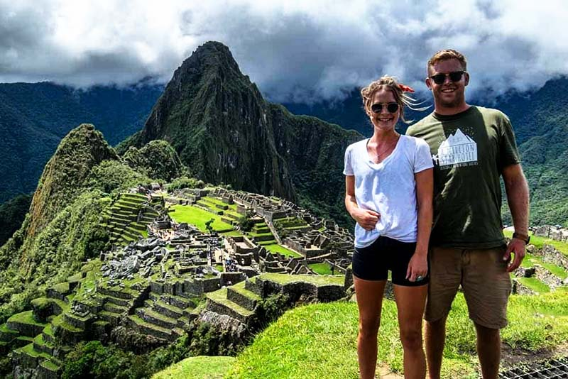
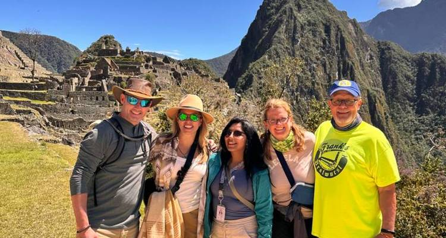

El sitio arqueológico abre todos los días desde las 6:00 hasta las 17:30 hs. Se recomienda ingresar temprano para disfrutar del amanecer y evitar las horas de mayor afluencia.
Machu Picchu

Ubicación
Ciudad: Cusco
País: Peru
Descripción
Es una de las maravillas más emblemáticas del mundo y el símbolo más reconocido del Perú. Ubicada a más de 2.400 metros sobre el nivel del mar, entre las montañas de los Andes y la selva tropical, Machu Picchu fue construida en el siglo XV durante el apogeo del Imperio Inca. Sus terrazas, templos y estructuras de piedra muestran el avanzado conocimiento arquitectónico de esta civilización. Visitarla es una experiencia única, ya sea llegando en tren desde Cusco o recorriendo el Camino Inca, con vistas y paisajes impresionantes.
Actividades Turísticas

Camino Inca
Es una ruta de senderismo que conecta el Valle Sagrado con la majestuosa ciudad perdida de los incas, ofrece un largo camino.

Ollantaytambo
Pueblo andino de calles empedradas y canales incas, mantiene su cultura y tradiciones convirtiendose en un Valle Sagrado.

Machu Picchu
Antigua ciudad inca enclavada en los Andes, deslumbra con su arquitectura sagrada, vistas imponentes y una gran historia.

Aguas Calientes
Puerta de entrada a Machu Picchu, combina encanto andino, aguas termales naturales y vistas únicas de la selva montañosa.

Rafting
Ofrece travesías emocionantes por ríos como el Urubamba y el Apurímac, entre montañas, selvas y paisajes andinos impresionantes.

Ciclismo Montaña
El ciclismo de montaña en Perú ofrece rutas espectaculares cerca de Machu Picchu, entre valles, selvas y antiguos caminos incas.
Cómo llegar a Machu Picchu
Cusco
Punto de partida
Bus - Tren
Bus a Ollantaytambo: 1 hs
Tren hacia Aguas Calientes: 1 hs 30 min
Machu Picchu
Entrada principal al santuario
Todo lo que debes saber antes de visitar Machu Picchu
Se puede llegar en tren desde Cusco o Urubamba hasta Aguas Calientes y luego en bus o caminando hasta la entrada. También es posible llegar a pie por el famoso Camino Inca.
El precio varía según el tipo de visita: solo Machu Picchu, Machu Picchu + Huayna Picchu o Machu Picchu + Montaña. Para turistas extranjeros, los precios van desde 150 a 250 soles.
Se recomienda llevar calzado cómodo, protector solar, gorra, agua, repelente y una cámara. No se permiten paraguas grandes, trípodes ni mochilas voluminosas.
La mejor temporada es entre mayo y octubre, durante la estación seca. Los meses de junio y julio ofrecen los días más despejados, ideales para la fotografía.
Dentro del complejo no hay baños ni venta de alimentos. Todo debe adquirirse antes de ingresar. Está prohibido fumar, comer y salirse de los senderos señalizados.
Reseñas de Nuestros Viajeros

Lara Hernández
"Muy buena la comunidad viajera, me gusta la asesoría personalizada para los viajes"

Lautaro Landucci
“Súper recomendado, fue una experiencia increíble y el viaje superó todas mis expectativas.”

Jordi Barea
“Gracias a la comunidad viajera pude resolver todas mis dudas con la asesoría y disfrutar por completo del viaje.”